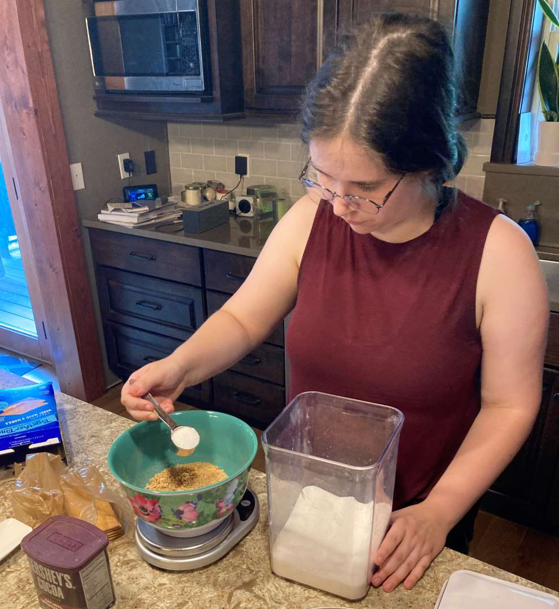
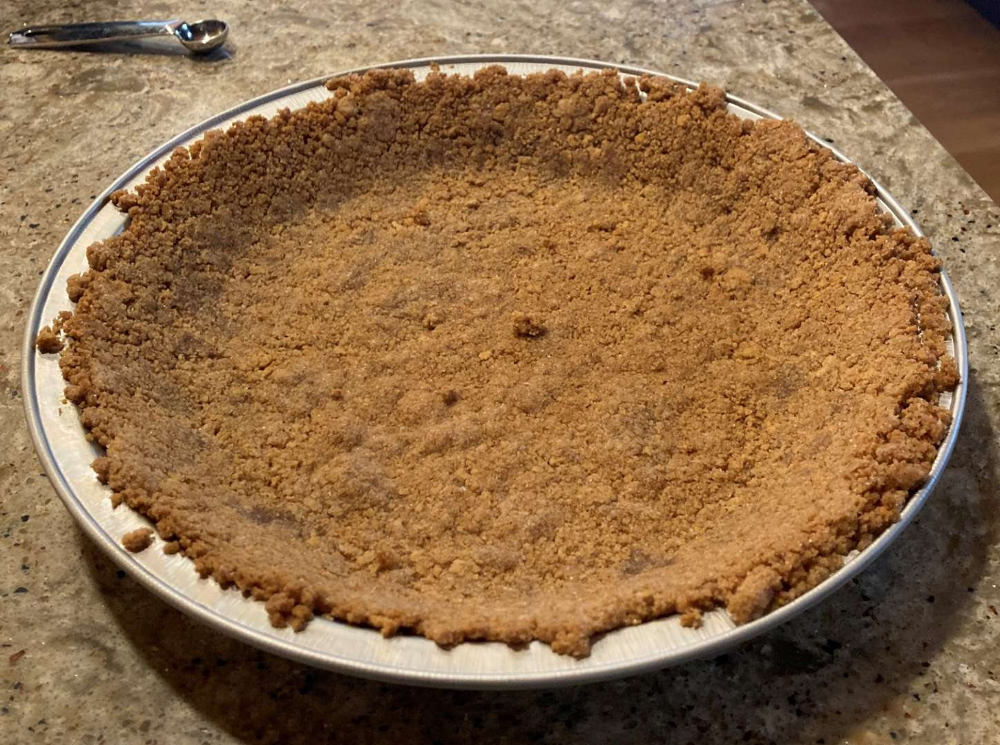
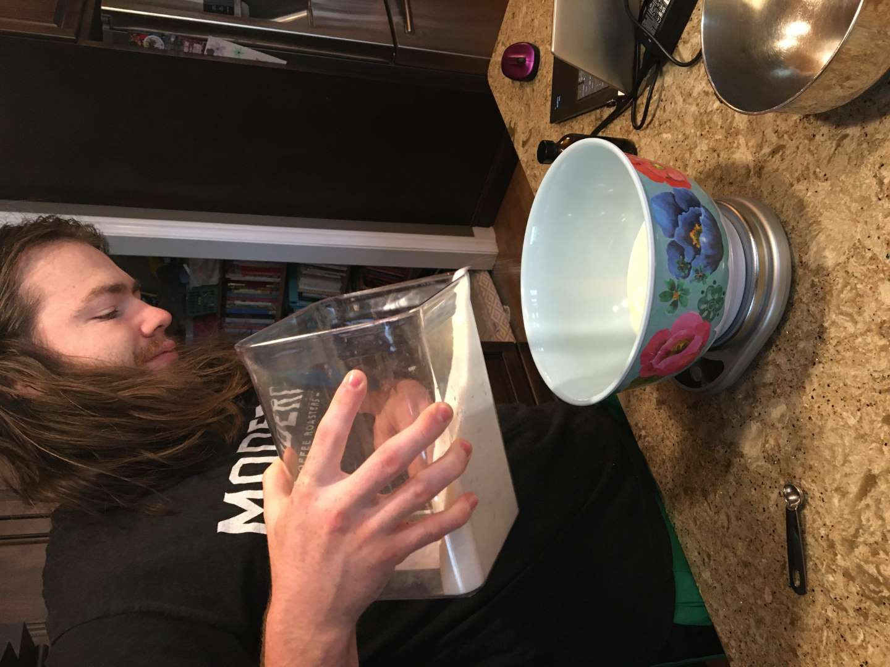
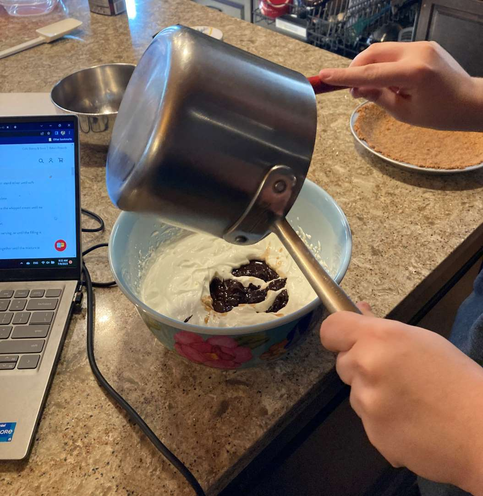
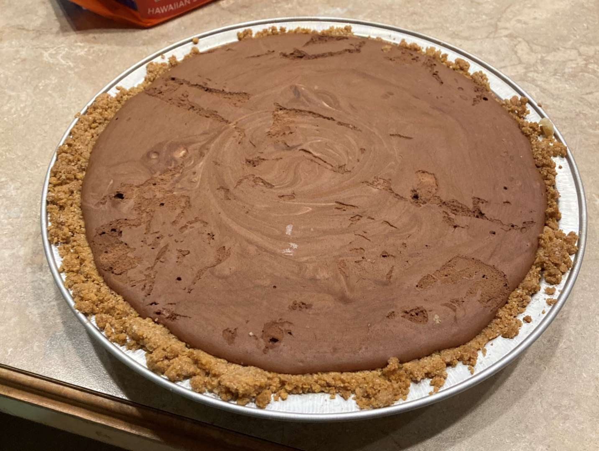

Pie 3: Chocolate Icebox
2023-07-07Recipe from King Arthur Baking.
Taste:
Difficulty:
Vibes:
Suggested pairings: ham sandwiches, Cool Whip
After the unexpected taste and frankly odd texture of the green tomato pie, Katie Beth and I were hankering after something classic, something unobjectionable. A pie no red-blooded American could dislike. A chilled chocolate pie with a delicious graham cracker crust.
Bolstering this decision was our plan to visit Katie Beth’s family in hot Tennessee. A cold pie made before the trip would be the perfect refreshing treat! (Good Humor marketing dept.: contact me if you need a new copywriter.)
 You learn new things about your spouse constantly when first married. I now know that Katie Beth is a graham-cracker-crumb-crust-making adept with years of torte experience. After we baked her crust (which turned out deliciously), we made the liquid filling together and poured it into the shell, then froze the dessert.
 Our total driving time with the pie was about 7 hours and we were careful to keep it frozen the whole time with ice packs, as a melt combined with a spill would have been disastrous.
The pie gods must have smiled upon us for the conveyance was smooth. So was the filling of the pie! It waas quickly devoured by KB's family and the dark chocolate taste was praised as not overly sweet. We highly recommend this recipe.